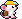
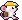
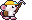

<meta charset="utf-8">
<meta name="viewport" content="width=device-width, initial-scale=1, viewport-fit=cover">
<title>Mouse Animation Test</title>
<link rel="stylesheet" href="https://fonts.googleapis.com/css2?family=Press+Start+2P&family=Inter:wght@400;600;700&display=swap">
<style>
:root { color-scheme: dark; --bg: #120f18; --panel: #2a2338; --line: #3b3350; --text: #f1edf8; --muted: #a9a1c2; --gold: #ffcf2e; --new: #46ef6c; }
* { box-sizing: border-box; }
body { margin: 0; padding: 0 16px 48px; background: var(--bg); color: var(--text); font-family: Inter, system-ui, sans-serif; }
main { max-width: 1040px; margin: 0 auto; }
.px { image-rendering: pixelated; display: block; }
h1 { margin: 24px 0 6px; font-family: 'Press Start 2P', monospace; font-size: 15px; line-height: 1.5; color: var(--gold); }
.lead { margin: 0 0 8px; max-width: 72ch; color: var(--muted); font-size: 14px; line-height: 1.55; }
h2 { margin: 32px 0 10px; font-size: 17px; }
.grid { display: grid; grid-template-columns: repeat(auto-fit, minmax(290px, 1fr)); gap: 12px; }
.card { padding: 12px; background: var(--panel); border: 1px solid var(--line); border-radius: 10px; min-width: 0; }
.card h3 { margin: 0 0 4px; font-size: 14px; }
.card p { margin: 0 0 10px; font-size: 13px; line-height: 1.5; color: var(--muted); }
.pair { display: flex; gap: 10px; }
.pair figure { flex: 1; margin: 0; display: flex; flex-direction: column; align-items: center; gap: 6px; padding: 10px 4px; background: #120e18; border-radius: 8px; }
.pair figcaption { font-size: 11px; color: var(--muted); }
.pair figure.new figcaption { color: var(--new); }
.box { height: 120px; display: flex; align-items: flex-end; justify-content: center; }
.big { width: 110px; }
.big.wide { width: 160px; }
.stage { display: flex; align-items: flex-end; justify-content: space-around; height: 96px; padding-bottom: 10px; overflow: hidden; border-radius: 8px;
  background: linear-gradient(#78c8f0 0 58%, #6fcf4f 58% 66%, #8b5a2b 66%); }
.stage img { width: 49.5px; }
.stage img.wide { width: 72px; }
/* Hoy en el juego: una imagen fija que sube y baja (beat / bob). */
.bob { animation: bob 1.4s steps(1) infinite; }
.bob.fast { animation-duration: .5s; }
@keyframes bob { 0%, 49% { transform: translateY(0) } 50%, 100% { transform: translateY(4%) } }
.cmp { display: grid; grid-template-columns: 1fr 1fr; gap: 12px; }
.cmp > div { min-width: 0; }
.cmp h4 { margin: 0 0 8px; font-size: 12px; color: var(--muted); font-weight: 600; letter-spacing: .4px; text-transform: uppercase; }
.cmp h4.new { color: var(--new); }
.verdict { margin-top: 28px; padding: 14px 16px; background: var(--panel); border: 1px solid var(--line); border-left: 3px solid var(--gold); border-radius: 8px; font-size: 14px; line-height: 1.6; max-width: 90ch; }
.verdict p { margin: 0 0 8px; } .verdict p:last-child { margin: 0; }
code { font-size: 12px; background: #120e18; padding: 1px 5px; border-radius: 4px; }
@media (max-width: 420px) { .cmp { grid-template-columns: 1fr; } }
</style>
<main>
  <h1>Ratones · test de animación</h1>
  <p class="lead">Hoy el juego no anima por fotogramas: cada ratón es una sola imagen que sube y baja, y el pico es una pieza aparte que gira. Aquí, el ratón propuesto animado fotograma a fotograma con pxl. Nada de esto está en el juego.</p>

  <h2>En la escena, a su tamaño</h2>
  <div class="cmp">
    <div><h4>Hoy (imagen que sube y baja)</h4>
      <div class="stage"></div></div>
    <div><h4 class="new">Por fotogramas</h4>
      <div class="stage"></div></div>
  </div>

  <h2>Ampliadas, una a una</h2>
  <div class="grid">
    <div class="card"><h3>Reposo</h3><p>Respira (el cuerpo baja 1 px, el gorro con él) y parpadea; a veces dos veces seguidas. 9 fotogramas, ciclo de 3,9 s.</p>
      <div class="pair"><figure><div class="box"></div><figcaption>Hoy</figcaption></figure>
        <figure class="new"><div class="box"></div><figcaption>Fotogramas</figcaption></figure></div></div>
    <div class="card"><h3>Caminar</h3><p>Patas alternas, el cuerpo sube 1 px en cada paso y la cola se balancea. 4 fotogramas a 8 por segundo.</p>
      <div class="pair"><figure><div class="box"></div><figcaption>Hoy</figcaption></figure>
        <figure class="new"><div class="box"></div><figcaption>Fotogramas</figcaption></figure></div></div>
    <div class="card"><h3>Picar</h3><p>Levanta el pico por encima del casco, baja, golpea con chispa y rebota. 4 fotogramas, 0,6 s; el golpe es el más corto.</p>
      <div class="pair"><figure class="new"><div class="box"></div><figcaption>Fotogramas</figcaption></figure></div></div>
  </div>

  <div class="verdict">
    <p><b>Qué gana:</b> el ratón parece vivo aunque esté quieto (respira, parpadea) y el golpe de pico tiene peso: anticipación, impacto rápido, rebote. Eso a tamaño real se nota más que la mejora de dibujo.</p>
    <p><b>Qué cuesta:</b> cada animación hay que dibujarla por pelaje y gorro (aquí solo blanco con casco). Con <code>swap</code> de paleta salen los pelajes gratis; los gorros, como piezas aparte encima del cuerpo, también. Lo que hoy es una pieza girada (el pico) pasaría a ir dibujado en cada fotograma.</p>
    <p><b>En el juego</b> sería un cambio de sistema: la escena tendría que elegir fotograma por tiempo en lugar de mover una imagen, y decidir qué animación toca a cada ratón (trabajando, acarreando, quieto). Es exploración; nada se toca sin tu aprobación.</p>
    <p>Fuente: <code>exploracion/pixel/anims.px.js</code>. Regenerar: <code>node ../../.claude/skills/pxl-pixel-art/bin/pxl.js build anims.px.js</code>.</p>
  </div>
</main>
